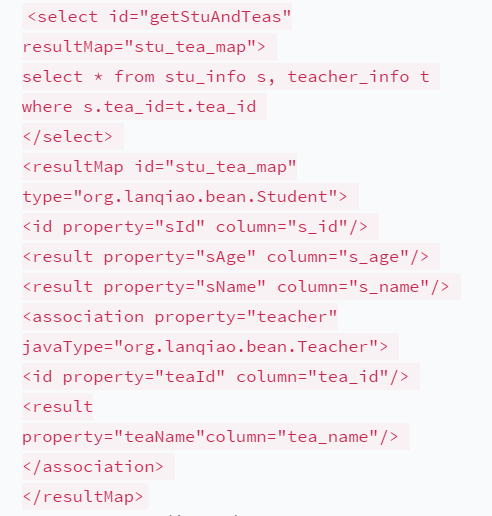
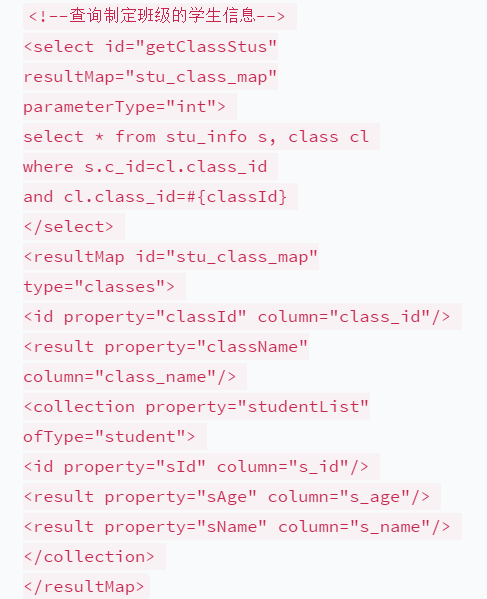

Mybatis知识总结
关联查询包括一对一查询，一对多查询，多对一查询，多对多查询
下面是一对一查询：

resultMap:指的是结果集映射关系，需要自己配置
property;指的是javaBean中的属性
column;指的是数据库中的字段
association:主要用于一对一查询
javaType:用来指定改属性的类型
下面是一对多查询：

collection：此标签用于一对多或者多对一查询中
ofType:表示集合中的元素类型
mybatis缓存
为了减轻数据压力，提高数据库的性能，我们往往会需要使用缓存。MyBatis为我们提供了一级缓存和二级缓存。
（1）一级缓存是SqlSession级别的缓存，在操作数据库的时候需要创建一个SqlSession，其中有一个HashMap，用于存储缓存数据。不同的SqlSession之间，其缓存数据的HashMap是不同的；
（2）二级缓存是Mapper级别的缓存，多个SqlSession去操作同一个Mapper中的SQL语句，则这些SqlSession可以共享二级缓存，即二级缓存是跨SqlSession的。